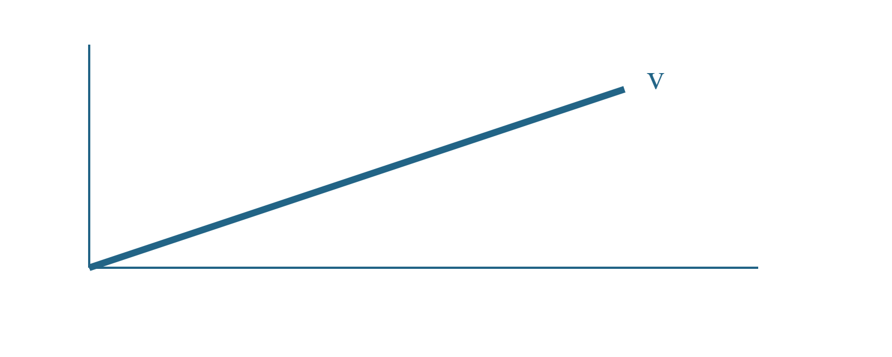

Educational component gallery
Design verification fixture
Developer examples only; no learner evidence or measured results.
Formula, code and table
import math
standard_error = sigma / math.sqrt(n)
print(standard_error)| Quantity | Symbol | Illustrative value |
|---|---|---|
| Population standard deviation | $\sigma$ | 2.0 |
| Sample size | $n$ | 25 |
| Standard error | $\mathrm{SE}$ | 0.4 |
Figures
Hint
Authored hint content stays in its original position.
Answer
Authored answer content stays in its original position.
Reveal
Authored reveal content stays in its original position.
Approved image placement

Reading and references
A precise statement, interpretation, and literal code remain distinct. See the formula, an authored citation (https://example.org/reference), and a vault concept.
A plain quotation remains a quotation.
First step
Nested condition
Unchecked source task
Second step
Subsection
Context stays in the authored sequence.
Supporting detail
A detail at the same hierarchy as the source.
Further detail
Six heading levels remain available.
Smallest heading
End of illustrative content.
Which procedure preserves a sealed validation set?
Hint
Separate development from validation.Solution
Fix the procedure before opening the sealed data.Explain why independence matters.
Vector demonstration
Sampling demonstration
Exact original Markdown
# Educational component gallery
Developer examples only; no learner evidence or measured results.
## Formula, code and table
> [!formula] Standard error under independent sampling
> $$\mathrm{SE}=\frac{\sigma}{\sqrt{n}}$$
> Assumes independent observations with common finite variance.
```python
import math
standard_error = sigma / math.sqrt(n)
print(standard_error)
```
| Quantity | Symbol | Illustrative value |
| --- | :---: | ---: |
| Population standard deviation | $\sigma$ | 2.0 |
| Sample size | $n$ | 25 |
| Standard error | $\mathrm{SE}$ | 0.4 |
## Figures
> [!info] Info
> Authored info content stays in its original position.
> [!concept] Concept
> Authored concept content stays in its original position.
> [!intuition] Intuition
> Authored intuition content stays in its original position.
> [!definition] Definition
> Authored definition content stays in its original position.
> [!assumption] Assumption
> Authored assumption content stays in its original position.
> [!established-fact] Established fact
> Authored established fact content stays in its original position.
> [!interpretation] Interpretation
> Authored interpretation content stays in its original position.
> [!open-question] Open question
> Authored open question content stays in its original position.
> [!warning] Warning
> Authored warning content stays in its original position.
> [!experiment] Experiment
> Authored experiment content stays in its original position.
> [!example] Example
> Authored example content stays in its original position.
> [!hint]- Hint
> Authored hint content stays in its original position.
> [!answer]- Answer
> Authored answer content stays in its original position.
> [!reveal]- Reveal
> Authored reveal content stays in its original position.
## Approved image placement

## Reading and references
A **precise statement**, *interpretation*, and `literal code` remain distinct. See [the formula](#section-3c132099852a), [an authored citation](https://example.org/reference), and [[Scientific assumptions|a vault concept]].
> A plain quotation remains a quotation.
1. First step
- Nested condition
- [ ] Unchecked source task
2. Second step
### Subsection
Context stays in the authored sequence.
#### Supporting detail
A detail at the same hierarchy as the source.
##### Further detail
Six heading levels remain available.
###### Smallest heading
End of illustrative content.